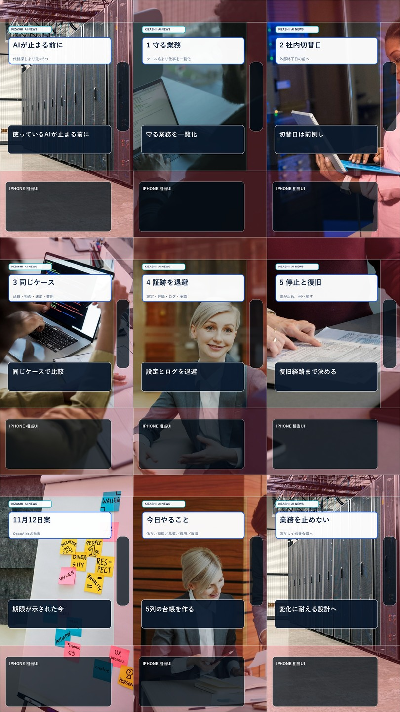
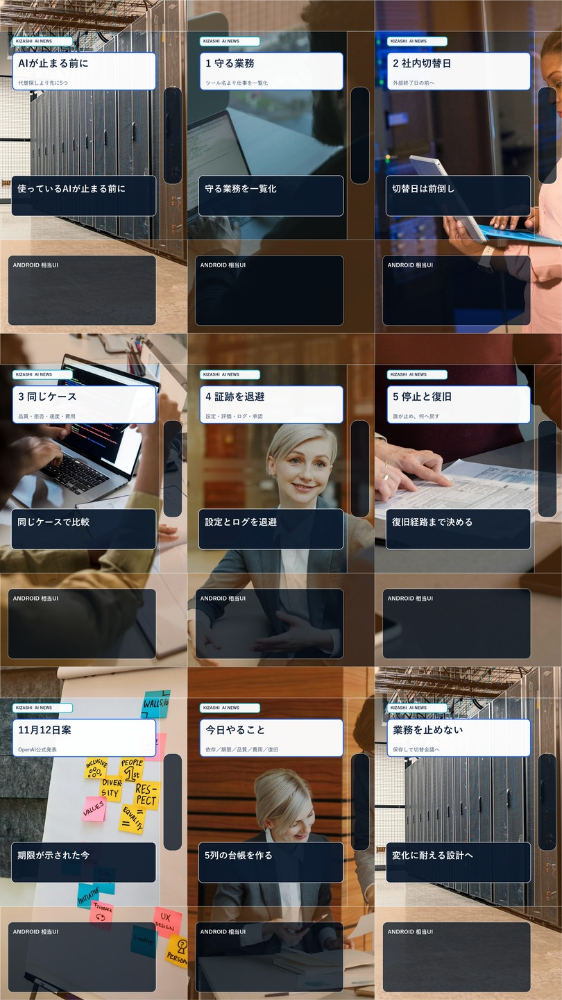

日曜Shorts 映像Revision 2
実在写真＋要点スライドの54秒映像です。字幕帯とスライド文字は490px以上分離しています。
これは無音の映像確認版です。Aivis Cloudの有料音声生成は未実行で、外部投稿receiptもありません。
端末UI検査


実在写真＋要点スライドの54秒映像です。字幕帯とスライド文字は490px以上分離しています。
これは無音の映像確認版です。Aivis Cloudの有料音声生成は未実行で、外部投稿receiptもありません。

